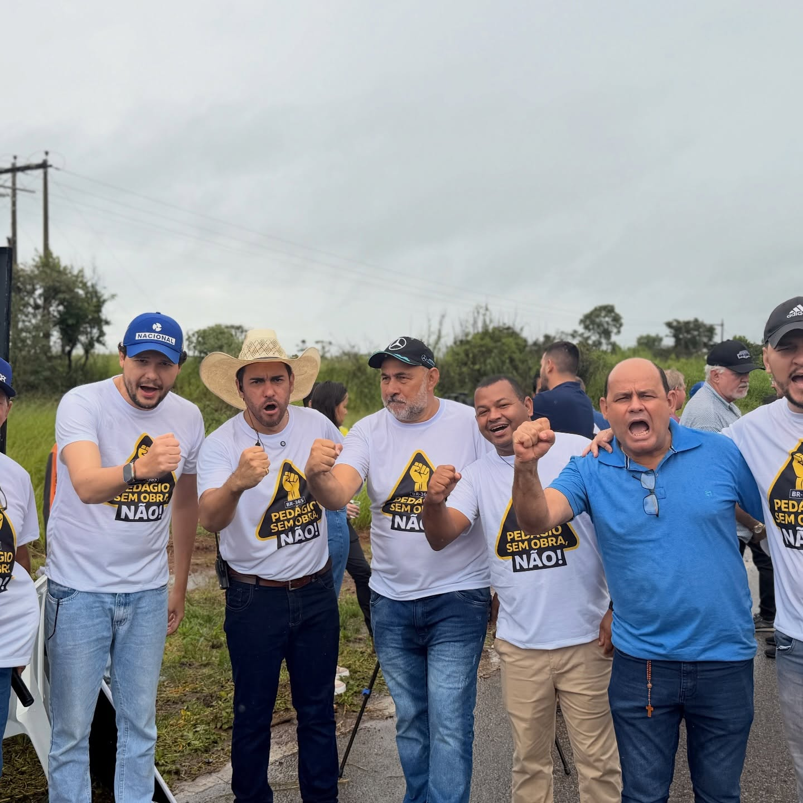
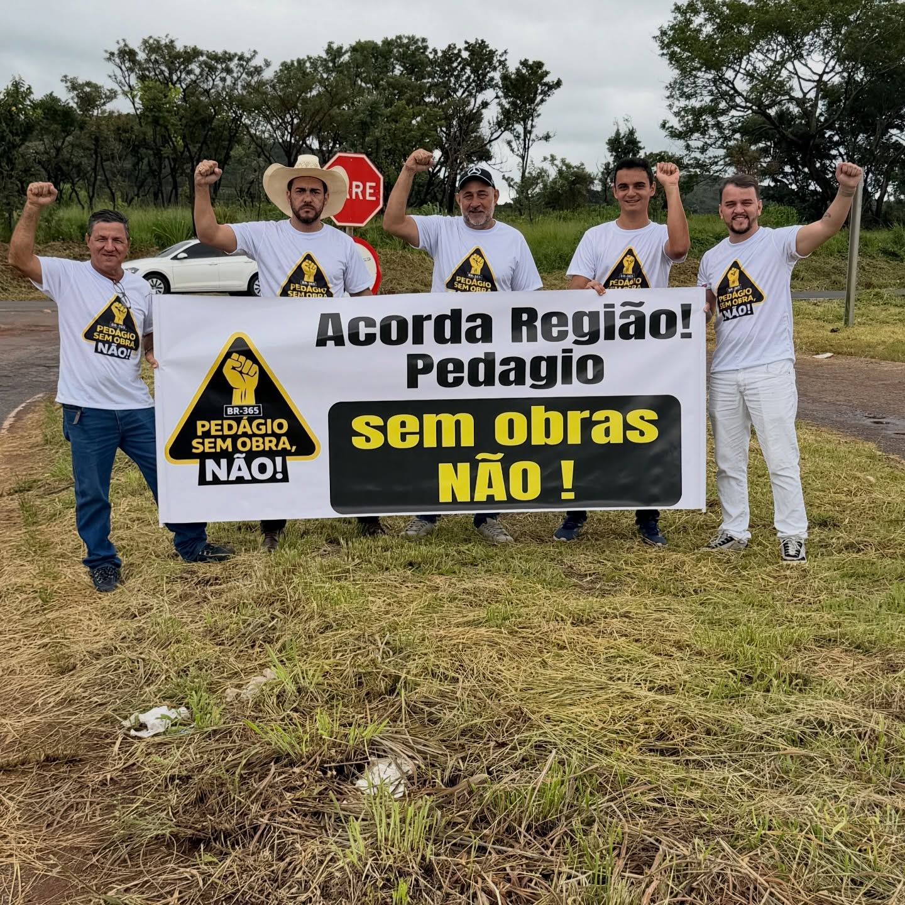
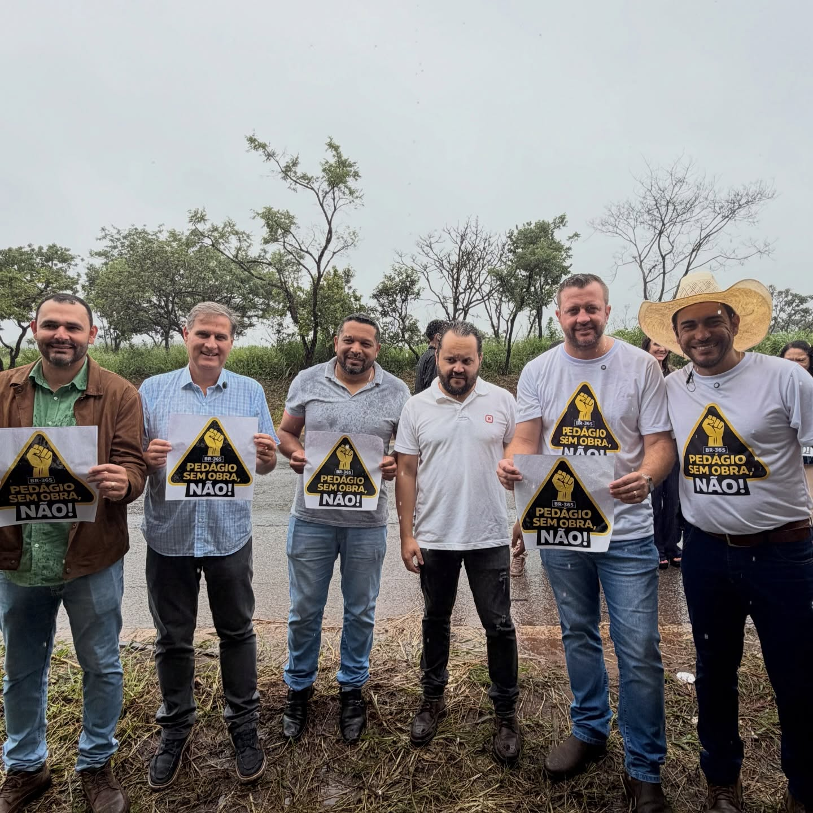
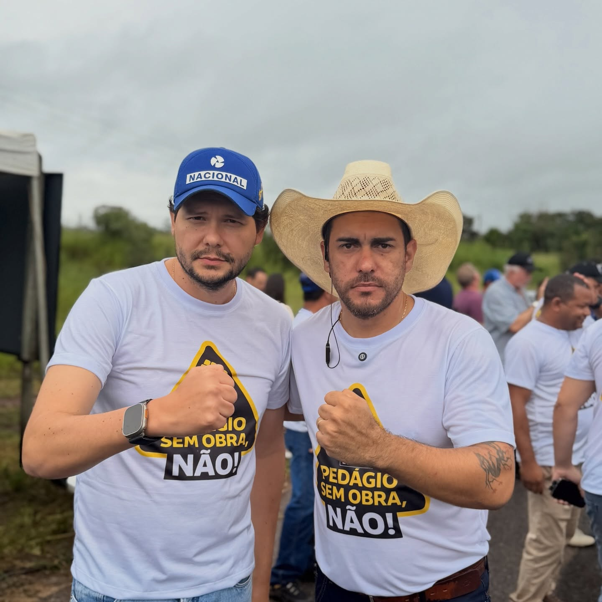
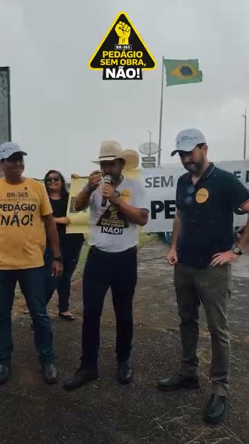

O painel dos acidentes
BR-365: quantos acidentes de Uberlândia até a BR-040
📅 Mês a mês
🟧 Com pedágio
Patrocínio → Uberlândia · concessão EPR Triângulo · km 474,6 a 605,5
🟦 Sem concessão
🗺️ O mapa da rodovia
Cada bolinha é um acidente, no km onde aconteceu. Toque nela para ver o que houve.
Trecho com pedágio (EPR Triângulo)
Trecho sem concessão
Teve morte
Teve ferido
Sem feridos
🚧 Praça de pedágio
📏 A rodovia esticada, km por km
Cada coluna é um pedaço de 5 km. Quanto mais alta, mais acidentes ali. As cruzes vermelhas são mortes.
⚠️ Os pontos mais perigosos
Os pedaços de 5 km com mais acidentes no período.
🕒 Últimos acidentes
Do mais novo para o mais antigo. Toque para ver no mapa.
💥 Que tipo de acidente acontece mais
✊ Nossa luta
Moradores, produtores, caminhoneiros e lideranças do Alto Paranaíba e do Noroeste de Minas que foram para a beira da rodovia cobrar uma coisa simples: primeiro a obra, depois o pedágio. O movimento é pacífico e cobra a duplicação imediata da BR-365, porque quem usa essa estrada todo dia está perdendo a vida nela.
▲ 1º ato · 02/02/2026 · trevo de Coromandel (BR-365 com MG-188)





▲ 2º ato · 07/02/2026 · trevo da Pipoca, Patos de Minas


- Janeiro de 2026 · O alertaO governo de Minas põe em licitação o Lote Noroeste: a BR-365 entre Patrocínio, Patos de Minas e a BR-040 iria para concessão com pedágio, sem a duplicação que a estrada pede. O movimento convoca o povo.
Estado de Minas - 02/02/2026 · 1º ato, em CoromandelDas 8h às 13h, no trevo da BR-365 com a MG-188, no acesso a Coromandel, com acompanhamento da PRF e presença de prefeitos da região. Debaixo de chuva.
Estado de Minas · Difusora 95 · fotos do movimento - 03/02/2026 · Na TVO movimento leva a pauta à TV Integração (Globo), em Uberlândia: "Não somos contra o progresso. Somos contra pagar antes de receber."
@omarcaobr - 07/02/2026 · 2º ato, em Patos de MinasO movimento cresce e chega ao trevo da Pipoca, em Patos de Minas, com a presença do prefeito Luís Eduardo Falcão, hoje vice-governador eleito.
@omarcaobr · @movimentobr365 - 09/02/2026 · Recado ao governo de MinasO movimento cobra o governador e o vice: diálogo, solução e compromisso com as estradas da região.
@movimentobr365 - 13/02/2026 · Edital revogado 🏆O Ministério dos Transportes não aceita entregar a BR-365 ao Estado, e o governo de Minas revoga o edital do Lote Noroeste. A duplicação passa a ser do DNIT. Pedágio sem obra, não!
Patrocínio Online · @omarcaobr - 30/03/2026 · O desafioO governador Mateus Simões diz ser contra pedágio sem obra. O movimento responde: então suspenda a cobrança enquanto não houver obra de verdade.
@movimentobr365 - 25/09/2026 · Licença da duplicação 🏆O Copam aprova a Licença Prévia da duplicação da BR-365 entre Patos de Minas e Patrocínio. A próxima cobrança é a licitação e a obra.
PatosJá · @movimentobr365 - 02/10/2026 · De novo no mesmo lugarDuas carretas batem no mesmo trecho onde, meses antes, dois caminhoneiros morreram numa batida de frente. Duplicação já!
@movimentobr365 - Hoje · Este painelCada acidente desde a manifestação, no km onde aconteceu, atualizado todo dia com dados da PRF e da imprensa.
- A próxima cobrançaLicitação e obra de duplicação pelo DNIT, de Uberlândia até a BR-040. Duplicação já!
Essa luta é de todos. Acompanhe e compartilhe.Seguir @movimentobr365